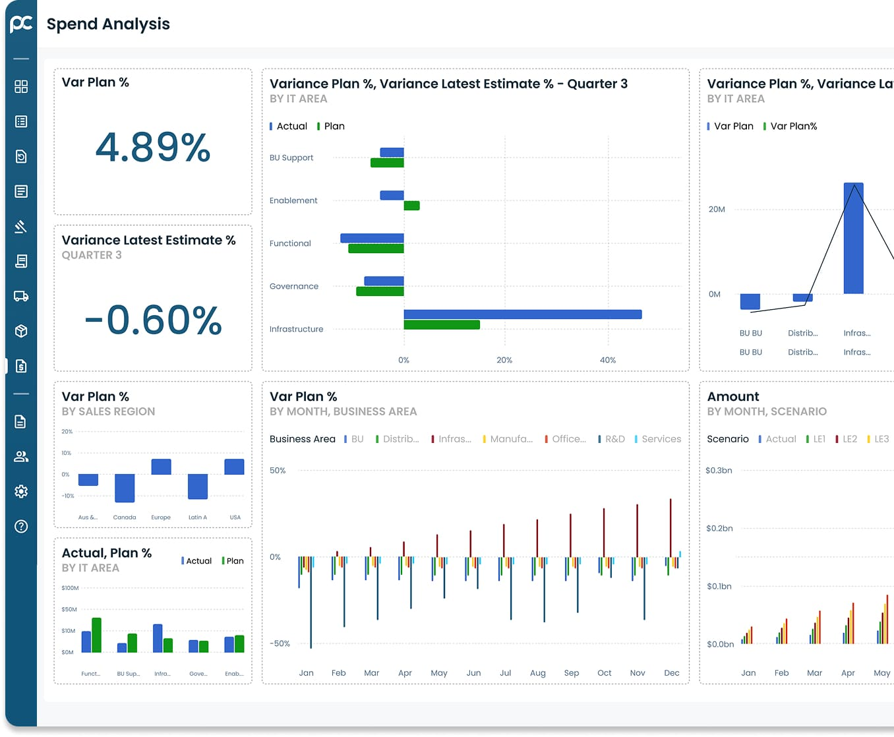

Procurement Software for Transport & Logistics - Upgrade the Future of Freight Procurement
Transform Your Logistics Network with AI-Powered Procurement Intelligence. Reduce transportation cost by up to 40%, and transform complex carrier management into a strategic sourcing.
 70% faster sourcing cycle times
70% faster sourcing cycle times
 Advanced Risk Monitoring
Barrier free centralized communication
with suppliers across the globe
Save Time and streamline
workload
Advanced Risk Monitoring
Barrier free centralized communication
with suppliers across the globe
Save Time and streamline
workload
See ProcureClix in Action
Book Your Demo Today!